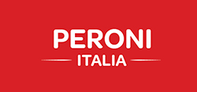
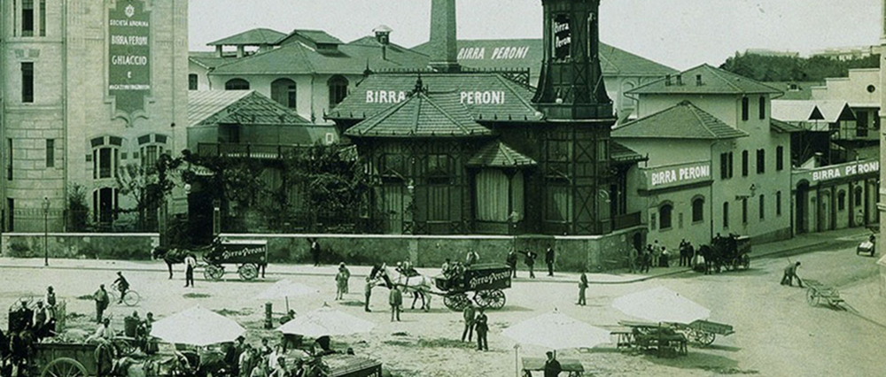

Container
Header
Logo
Social Media Icons
Social Media


Main Image
Content (text and images)
Text
1968
Peroni Nastro Azzurro launched iconic advertising campaigns that have been essential to the success of the brand. In these campaigns the model is styled in a sailer outfit and hat, as an homage to the sea and sailing world, a passion strongly held by the Peroni family. All advertising continued this nautical theme; the ribbon on the sailor hat was representative of the one featured on the neck of the bottle, becoming a hugely recognisable symbol for the brand.
Content (text and images)
Text
1960s
Post war, modern Italian creativity met the industrial world and the two blossomed into the economic boom. Italian style beguiled the international jet setters, including powerful politicians and wealthy royals, as well as A-list actors. They converged on Italy to savour la dolce vita (the sweet life). This was the era and place that saw the birth of many iconic Italian brands.
Content (text and images)
Text
1933
Luxury Italian liner SS Rex won the coveted 'Blue Riband' ('Nastro Azzurro' in Italian), a prize awarded for the fastest crossing of the Atlantic by passenger liners. Since then, the SS Rex has become a symbol of national pride, inspiring the name of Peroni Nastro Azzurro 30 years later.